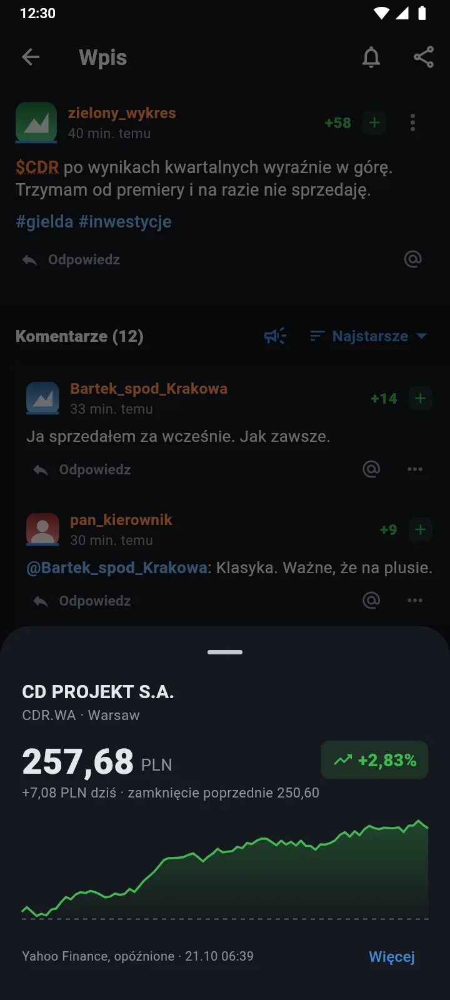
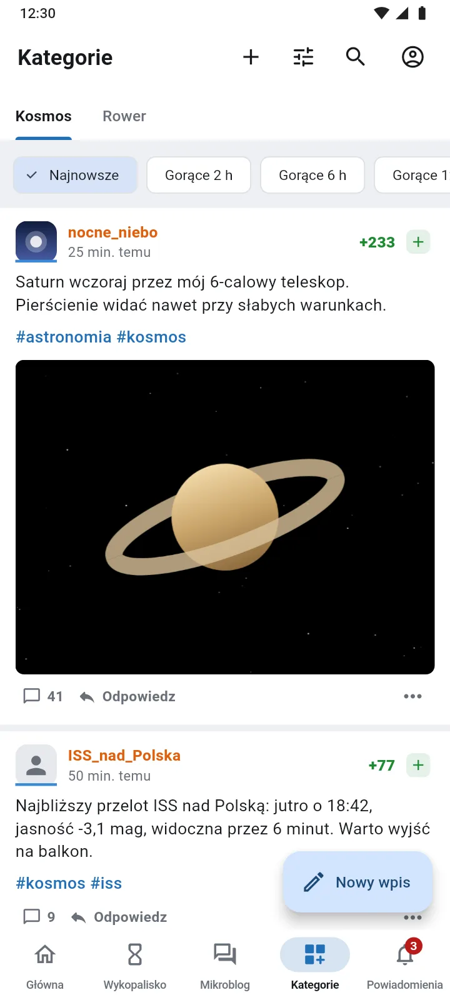
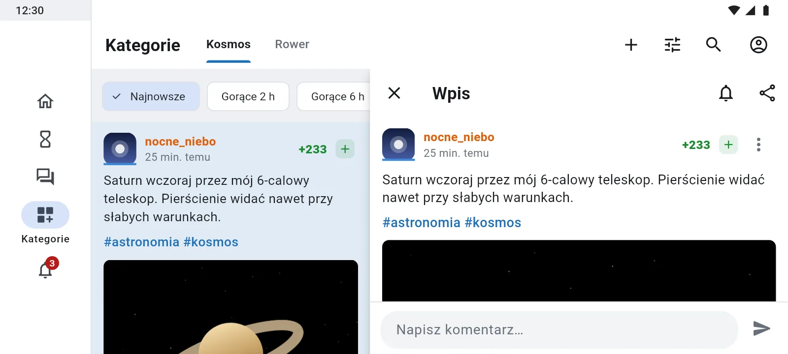
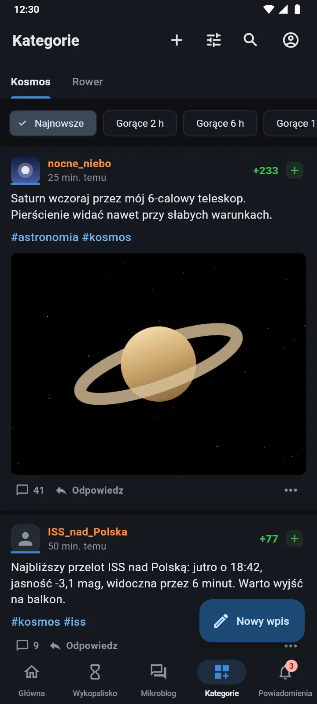
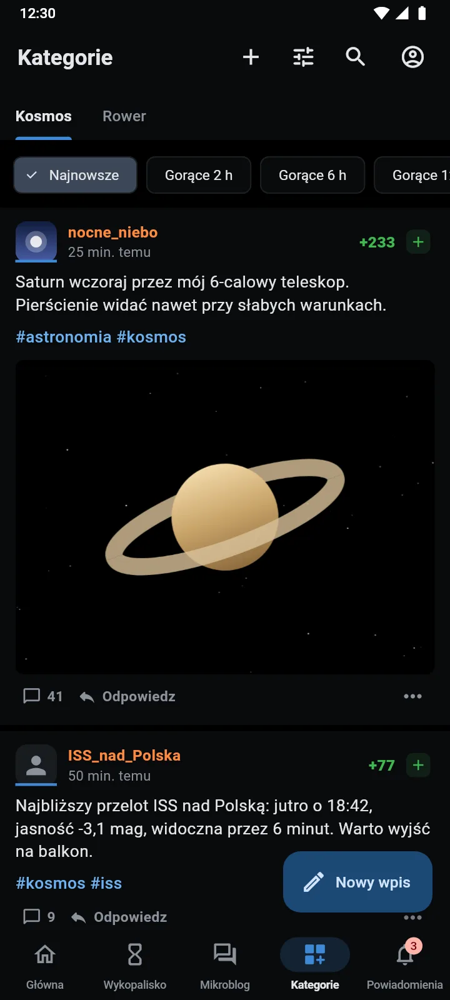

Wykop, poukładany.
Mirkoład to nieoficjalny klient Wykop.pl na Androida. Mikroblog, znaleziska, powiadomienia i wiadomości w szybkiej, natywnej aplikacji, z kilkoma rzeczami, których brakowało.
Wkrótce w Google Play↓ zobacz, co potrafi
Widać, kto komu odpisał
Komentarze zostają na jednej, płaskiej liście, a mimo to wiesz, gdzie toczy się rozmowa. Przy komentarzu z odpowiedziami jest licznik, a jedno stuknięcie otwiera całą wymianę w osobnym arkuszu.
Autor wpisu ma etykietę, a komentarze dodane od Twojej ostatniej wizyty dostają kropkę.
Ktoś pisze $CDR? Masz kurs.
Tickery giełdowe w treści są podkreślone. Stuknięcie pokazuje cenę, zmianę z dnia i wykres sesji, bez wychodzenia z wpisu.
Działa ze spółkami z USA, z GPW i z kryptowalutami.

1ticker w treści 2cena i zmiana dnia 3wykres sesji- 1ticker w treści
- 2cena i zmiana dnia
- 3wykres sesji
Twój własny kanał
Zbierz tagi, autorów i frazy w jedną kategorię. Dostaje własną zakładkę: najnowsze albo najgorętsze z ostatnich 2, 6, 12 lub 24 godzin.
Na przykład „Kosmos” z #astronomia, #kosmos i #spacex.

1Twoja kategoria 2gorące z 2–24 h- 1Twoja kategoria jako zakładka
- 2gorące z ostatnich 2–24 h
Tablet i poziomo
Na szerokim ekranie nawigacja przechodzi na bok, a otwarty wpis pojawia się obok listy. Czytasz dalej, nie tracąc miejsca.

Jasno, ciemno albo czarno
Motyw systemowy, jasny i ciemny, a do tego czarne tło AMOLED, które oszczędza baterię. Rozmiar tekstu od 85 do 130 % i widok zwarty dla tych, którzy chcą widzieć więcej naraz.


I jeszcze
- Powiadomienia w tleKażda odpowiedź osobno, z awatarem autora.
- Szkic komentarza na doleOdpowiedz, cytuj i wołaj, a nic się nie nadpisze.
- MegafonZawołaj całą dyskusję albo plusujących jednym stuknięciem.
- Filmy w aplikacjiYouTube, Streamable i posty z X bez przełączania aplikacji.
- Przeglądarka zdjęćPrzybliżanie, galeria, zamykanie gestem w dół.
- Wiadomości prywatneRozmowy z dymkami i zdjęciami.
- Tag z archiwumSkocz do dowolnego miesiąca w historii tagu.
- Czarne listyLudzie, tagi i domeny, które chcesz pominąć.
- Treści +18 pod kontroląUkryte, rozmyte albo widoczne, jak wolisz.
Pytania
- Czy to oficjalna aplikacja Wykopu?
- Nie. Mirkoład to nieoficjalny klient, niezwiązany z Wykop.pl. Korzysta z oficjalnego API Wykopu, a na publikację w Google Play ma zgodę serwisu.
- Jak się loguję?
- Na stronie logowania Wykopu, którą aplikacja otwiera w swoim oknie. Hasło trafia wyłącznie do Wykopu. Bez logowania też czytasz znaleziska, wpisy i komentarze.
- Czy są reklamy?
- Nieliczne: baner co 10 albo 20 pozycji na liście. Usuniesz je na stałe jednorazowym zakupem, bez abonamentu. Żadna funkcja nie jest płatna.
- Co z moimi danymi?
- Mirkoład nie ma własnych serwerów. Ustawienia, kategorie i token logowania zostają na telefonie. Szczegóły: polityka prywatności.
- Jak zgłosić błąd?
- W aplikacji: Ustawienia → O aplikacji → Zgłoś błąd. Zgłoszenia trafiają na tag #mirkoladbledy. Można też napisać na contact@codehappens.dev.
- Kiedy pobiorę?
- Wkrótce, z Google Play. Odnośnik pojawi się na tej stronie.